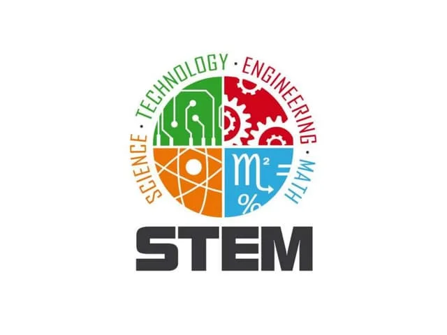
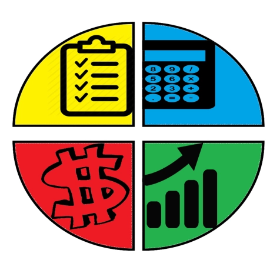
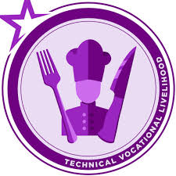
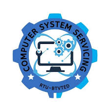

STEM
The STEM strand (Science, Technology, Engineering, and Mathematics) is a senior high school academic track focusing on advanced math, physics, biology, and chemistry to prepare students for technical careers. It develops analytical skills for fields like engineering, medicine, and computer science. Core subjects include calculus, physics, chemistry, and research.

Business & Entrepreneurship (BE)
The Business and Entrepreneurship (BE) strand is a Senior High School academic track under the K-12 program designed to prepare students for college degrees in business, finance, and marketing. It builds foundations in financial literacy, management, and entrepreneurship through subjects like accounting, marketing, and economics.

ASSH
ASSH stands for Arts, Social Sciences, and Humanities, a specialized academic cluster/strand under the Strengthened Senior High School Program in the Philippines. It serves as an updated or alternative term for the traditional HUMSS strand, focusing on critical thinking in communication, literature, philosophy, and social issues.

Computer Programming
The Programming Strand (typically under the TVL-ICT track) provides high school students with foundational skills in software development, including coding in languages like Python, Java, and JavaScript. It features hands-on, project-based learning to prepare students for careers as programmers, developers, or IT specialists.
Events Management Services
The Events Management Services (EMS) NC III strand in Senior High School is a Technical-Vocational-Livelihood (TVL) track under Home Economics, focusing on planning, organizing, and executing events. It prepares students for careers in the tourism and hospitality industry through hands-on training, covering event conceptualization, venue, logistics, marketing, and safety.

Kitchen Operations / Cookery
The Cookery strand in Senior High School is a Technical-Vocational-Livelihood (TVL) track under the Home Economics strand, designed to equip students with culinary skills, kitchen safety, and management abilities. It focuses on hands-on training for careers as chefs, cooks, or entrepreneurs, often resulting in a National Certificate (NC) II.

Computer Systems Servicing (CSS)
Computer Systems Servicing (CSS) NC II is a technical-vocational program focused on installing, configuring, diagnosing, and repairing computer systems, networks, and servers. It prepares individuals for roles like IT technicians or network administrators, covering hardware assembly, software installation, and network setup.
